공조냉동기계기사(구) (2017-08-26 기출문제)
1과목: 기계열역학
1. 다음 중 강도성 상태량(intensive property)에 속하는 것은?
- 온도
- 체적
- 질량
- 내부에너지
(정답률: 76%)

2. 다음 중 냉매의 구비조건으로 틀린 것은?
- 증발 압력이 대기압보다 낮을 것
- 응축 압력이 높지 않을 것
- 비열비가 작을 것
- 증발열이 클 것
(정답률: 61%)
3. 출력 15kW의 디젤 기관에서 마찰 손실이 그 출력의 15% 일 때 그 마찰 손실에 의해서 시간당 발생하는 열량은 약 몇 kJ인가?
- 2.25
- 25
- 810
- 8100
(정답률: 59%)
4. 그림과 같이 A, B 두 종류의 기체가 한 용기안에서 박막으로 분리되어 있다. A의 체적은 0.1m3, 질량은 2kg이고, B의 체적은 0.4m3, 밀도는 1kg/m3이다. 박막이 파열되고 난 후에 평형에 도달하였을 때 기체 혼합물의 밀도는 약 몇 kg/m3인가?
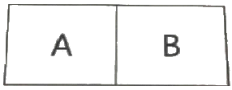
- 4.8
- 6.0
- 7.2
- 8.4
(정답률: 61%)
5. 체적이 0.1m3인 용기 안에 압력 1MPa, 온도 250˚C의 공기가 들어 있다. 정적과정을 거쳐 압력이 0.35Mpa로 될 때 이 용기에서 일어난 열전달 과정으로 옳은 것은? (단, 공기의 기체상수는 0.287kJ/(kgㆍK), 정압비열은 1.0035 kJ/(kgㆍK) 정적비열은 0.7165 kJ/(kgㆍK)이다.)
- 약 162kJ의 열이 용기에서 나간다.
- 약 162kJ의 열이 용기로 들어간다.
- 약 227kJ의 열이 용기에서 나간다.
- 약 227kJ의 열이 용기로 들어간다.
(정답률: 53%)
6. 다음 중 이론적인 카르노 사이클 과정(순서)을 옳게 나타낸 것은? (단, 모든 사이클은 가역 사이클이다.)
- 단열압축→정적가열→단열팽창→정적방열
- 단열압축→단열팽창→정적가열→정적방열
- 등온팽창→등온압축→단열팽창→단열압축
- 등온팽창→단열팽창→등온압축→단열압축
(정답률: 66%)
7. 어느 발명가가 바닷물로부터 매시간 1800kJ의 열량을 공급받아 0.5kW 출력의 열기관을 만들었다고 주장한다면, 이 사실은 열역학 제 몇 법칙에 위반 되겠는가?
- 제 0법칙
- 제 1법칙
- 제 2법칙
- 제 3법칙
(정답률: 76%)
8. 1kg의 기체로 구성되는 밀폐계가 50kJ의 열을 받아 15kJ의 일을 했을 때 내부에너지 변화량은 얼마인가? (단, 운동에너지의 변화는 무시한다.)
- 65kJ
- 35kJ
- 26kJ
- 15kJ
(정답률: 76%)
9. 랭킨 사이클로 작동되는 증기동력 발전소에서 20MPa, 45˚C의 물이 보일러에 공급되고, 응축기 출구에서의 온도는 20˚C, 압력은 2.339kPa이다. 이 때 급수펌프에서 수행하는 단위질량당 일은 약 몇 kJ/kg인가? (단, 20˚C에서 포화액 비체적은 0.001002m3/kg, 포화증기 비체적은 57.79m3/kg이며, 급수 펌프에서는 등엔트로피 과정으로 변화한다고 가정한다.)
- 0.4681
- 20.04
- 27.14
- 1020.6
(정답률: 50%)
10. 3kg의 공기가 들어있는 실린더가 있다. 이 공기가 200kPa, 10˚C인 상태에서 600kPa이될 때까지 압축할 때 공기가 한 일은 약 몇 kJ인가? (단, 이 과정은 폴리트로프 변화로서 폴리트로프 지수는 1.3이다. 또한 공기의 기체상수는 0.287kJ/(kgㆍK)이다.)
- -285
- -235
- 13
- 125
(정답률: 62%)
11. 가스터빈으로 구동되는 동력 발전소의 출력이 10MW이고 열효율이 25%라고 한다. 연료의 발열량이 45000kJ/kg이라면 시간당 공급해야 할 연료량은 약 몇 kg/h 인가?
- 3200
- 6400
- 8320
- 12800
(정답률: 67%)
12. 초기에 온도 T, 압력 P상태의 기체(질량 m)가 들어있는 견고한 용기에 같은 기체를 추가로 주입하여 최종적으로 질량 3m, 온도 2T 상태가 되었다. 이 때 최종 상태에서의 압력은? (단, 기체는 이상기체이고, 온도는 절대온도를 나타낸다.)
- 6P
- 3P
- 2P
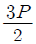
(정답률: 71%)
13. 그림과 같이 다수의 추를 올려놓은 피스톤이 설치된 실린더 안에 가스가 들어 있다. 이때 가스의 최초 압력이 300kPa 이고, 초기 체적은 0.⑤m3이다. 여기에 열을 가하여 피스톤을 상승시킴과 동시에 피스톤 추를 덜어내어 가스온도를 일정하게 유지하여 실린더 내부의 체적을 증가시킬 경우 이 과정에서 가스가 한 일은 약 몇 kJ인가? (단, 이상기체 모델로 간주하고, 상승 후의 체적은 0.2m3이다.)
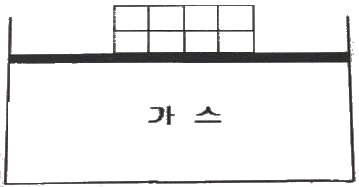
- 10.79kJ
- 15.79kJ
- 20.79kJ
- 25.79kJ
(정답률: 61%)
14. 어떤 물질 1kg이 20˚C에서 30˚C로 되기 위해 필요한 열량은 약 몇 kJ 인가? (단, 비열 (C, kJ/(kgㆍK))은 온도에 대한 함수로서 C=3.594+0.0372T이며, 여기서 온도(T)의 단위는 K이다.)
- 4
- 24
- 45
- 147
(정답률: 46%)
15. 체적이 0.5m3, 온도가 80˚C인 밀폐 압력 용기속에 이상기체가 들어있다. 이 기체의 분자량이 24이고, 질량이 10kg이라면 용기속의 압력은 약 몇 kPa인가?
- 1845.4
- 2446.9
- 3169.2
- 3885.7
(정답률: 71%)
16. 어떤 냉장고의 소비전력이 2kW이고, 이 냉장고의 응축기에서 방열되는 열량이 5kW라면, 냉장고의 성적계수는 얼마인가? (단, 이론적인 증기압축 냉동사이클로 운전된다고 가정한다.)
- 0.4
- 1.0
- 1.5
- 2.5
(정답률: 54%)
17. 오토사이클(Otto cycle) 기관에서 헬륨(비열비=1.66)을 사용하는 경우의 효율( )과 공기(비열비=1.4)를 사용하는 경우의 효율(ηair)을 비교하고자 한다. 이 때 ηHe/ηair 값은? (단, 오토 사이클의 압축비는 10 이다.)
- 0.681
- 0.770
- 1.298
- 1.468
(정답률: 67%)
18. 물 2L를 1kW의 전열기를 사용하여 20˚C로부터 100˚C까지 가열하는데 소요되는 시간은 약 몇 분(min)인가? (단, 전열기 열량의 50%가 물을 가열하는데 유효하게 사용되고, 물은 증발하지 않는 것으로 가정한다. 물의 비열은 4.18kJ/(kgㆍK)이다.)
- 22.3
- 27.6
- 35.4
- 44.6
(정답률: 56%)
19. 이론적인 카르노 열기관의 효율(η)을 구하는 식으로 옳은 것은? (단, 고열원의 절대온도는 TH, 저열원의 절대온도는 TL이다.)
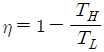
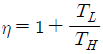
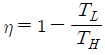
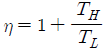
(정답률: 77%)
20. 1kg의 이상기체가 압력 100kPa, 온도 20˚C의 상태에서 압력 200kPa, 온도 100˚C의 상태로 변화하였다면 체적은 어떻게 되는가? (단, 변화전 체적을 V라고 한다.)
- 0.64V
- 1.57V
- 3.64V
- 4.57V
(정답률: 63%)
2과목: 냉동공학
21. 증발온도 -30˚C, 응축온도 45˚C에서 작동되는 이상적인 냉동기의 성적계수는?
- 2.2
- 3.2
- 4.2
- 5.2
(정답률: 76%)
22. 흡수식 냉동장치에서의 흡수제 유동방향으로 틀린 것은?
- 흡수기→재생기→흡수기
- 흡수기→재생기→증발기→응축기→흡수기
- 흡수기→용액열교환기→재생기→용액열교환기→흡수기
- 흡수기→고온재생기→저온재생기→흡수기
(정답률: 62%)
23. 열전달에 관한 설명으로 옳은 것은?
- 열관류율의 단위는 kW/mㆍ˚C이다.
- 열교환기에서 성능을 향상시키려면 병류형보다는 향류형으로 하는 것이 좋다.
- 일반적으로 핀(fin)은 열전달계수가 높은 쪽에 부착한다.
- 물 때 및 유막의 형성은 전열작용을 증가시킨다.
(정답률: 64%)
24. 브라인에 대한 설명으로 틀린 것은?
- 에틸렌글리콜은 무색, 무취이며, 물로 희석하여 농도를 조절할 수 있다.
- 염화칼슘은 무취로서 주로 식품동결에 쓰이며, 직접적 동결방법을 이용한다.
- 염화마그네슘 브라인은 염화나트륨 브라인보다 동결점이 낮으며 부식성도 작다.
- 브라인에 대한 부식 방지를 위해서는 밀폐순환식을 채택하여 공기에 접촉하지 않게 해야한다.
(정답률: 68%)
25. 2원 냉동장치에 관한 설명으로 틀린 것은?
- 증발온도 -70˚C 이하의 초저온 냉동기에 적합하다.
- 저단압축기 토출냉매의 과냉각을 위해 압축기 출구에 중간냉각기를 설치한다.
- 저온측 냉매는 고온측 냉매보다 비등점이 낮은 냉매를 사용한다
- 두 대의 압축기 소비동력을 고려하여 성능계수(COP)를 구한다.
(정답률: 58%)
26. 냉각수 입구 온도가 15˚C이며 매분 40L로 순환되는 수냉식 응축기에서 시간당 18000kcal의 열이 제거되고 있을 때 냉각수 출구온도(˚C)는?
- 22.5
- 23.5
- 25.5
- 30
(정답률: 65%)
27. 여름철 공기열원 열펌프 장치로 냉방 운전할 때, 외기의 건구온도 저하 시 나타나는 현상으로 옳은 것은?
- 응축압력이 상승하고, 장치의 소비전력이 증가한다.
- 응축압력이 상승하고, 장치의 소비전력이 감소한다.
- 응축압력이 저하하고, 장치의 소비전력이 증가한다.
- 응축압력이 저하하고, 장치의 소비전력이 감소한다.
(정답률: 61%)
28. 압력 2.5kg/cm2에서 포화온도는 -20˚C이고, 이 압력에서의 포화핵 및 포화증기의 비체적 값이 각각 0.74L/kg, 0.09254m3/kg일 때, 압력 2.5kg/cm2에서 건도 (x)가 0.98인 습증기의 비체적(m3/kg)은 얼마인가?
- 0.08⑤0
- 0.0⑤84
- 0.06754
- 0.09070
(정답률: 61%)
29. 냉동장치의 운전 준비 작업으로 가장 거리가 먼 것은?
- 윤활상태 및 전류계 확인
- 벨트의 장력상태 확인
- 압축기 유면 및 냉매량 확인
- 각종 밸브의 개폐 유ㆍ무 확인
(정답률: 51%)
30. 다음 냉매 중 2원 냉동장치의 저온측 냉매로 가장 부적합한 것은?
- R-14
- R-32
- R-134a
- 에탄(C2H6)
(정답률: 50%)
31. 제빙에 필요한 시간을 구하는 공식이 아래와 같다. 이 공식에서 a와 b가 의미하는 것은?
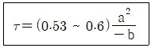
- a : 브라인온도, b : 결빙두께
- a : 결빙두께, b : 브라인유량
- a : 결빙두께, b : 브라인온도
- a : 브라인유량, b : 결빙두께
(정답률: 63%)
32. 흡수식 냉동기에 대한 설명으로 틀린 것은?
- 흡수식 냉동기는 열의 공급과 냉각으로 냉매와 흡수제가 함께 분리되고 섞이는 형태로 사이클을 이룬다
- 냉매가 암모니아일 경우에는 흡수제로 리튬브로마이드(LiBr)를 사용한다
- 리튬브로마이드 수용액 사용 시 재료에 대한 부식성 문제로 용액에 미량의 부식억제제를 첨가한다.
- 압축식에 비해 열효율이 나쁘며 설치면적을 많이 차지한다.
(정답률: 75%)
33. 다음 P-i선도와 같은 2단 압축 2단 팽창 사이클로 운전되는 NH3냉동장치에서 고단측냉매 순환량(kg/h)는 얼마인가? (단, 냉동능력은 55000kcal/h 이다.)
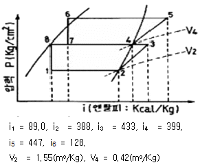
- 210.8
- 220.7
- 233.5
- 242.9
(정답률: 45%)
34. 다기통 콤파운드 압축기가 다음과 같이 2단압축 1단팽창 냉동사이클로 운전되고 있다. 냉동능력이 12RT일 때 저단측 피스톤 토출량(m3/h)은? (단, 저ㆍ고단측의 체적효율은 모두 0.65이다.)
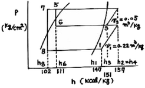
- 219.2
- 249.2
- 299.7
- 329.7
(정답률: 49%)
35. 다음 중 왕복동식 냉동기의 고압측 압력이 높아지는 원인에 해당되는 것은?
- 냉각수량이 많거나 수온이 낮음
- 압축기 토출밸브 누설
- 불응축가스 혼입
- 냉매량 부족
(정답률: 57%)
36. 증발하기 쉬운 유체를 이용한 냉동방법이 아닌 것은?
- 증기분사식 냉동법
- 열전냉동법
- 흡수식 냉동법
- 증기압축식 냉동법
(정답률: 75%)
37. 냉동능력 감소와 압축기 과열 등의 악영향을 미치는 냉동 배관 내의 불응축 가스를 제거하기 위해 설치하는 장치는?
- 액-가스 열교환기
- 여과기
- 어큐물레이터
- 가스퍼저
(정답률: 78%)
38. 증발온도는 일정하고 응축온도가 상승할 경우 나타나는 현상으로 틀린 것은?
- 냉동능력 증대
- 체적효율 저하
- 압축비 증대
- 토출가스 온도 상승
(정답률: 76%)
39. 냉동장치에서 응축기에 관한 설명으로 옳은 것은?
- 응축기 내의 액회수가 원활하지 못하면 액면이 높아져 열교환의 면적이 적어지므로 응축 압력이 낮아진다.
- 응축기에서 방출하는 냉매가스의 열량은 증발기에서 흡수하는 열량보다 크다
- 냉매가스의 응축온도는 압축기의 토출가스 온도보다 높다
- 응축기 냉각수 출구온도는 응축온도보다 높다
(정답률: 56%)
40. 냉장실의 냉동부하가 크게 되었다. 이 때 냉동기의 고압측 및 저압측의 압력의 변화는?
- 압력의 변화가 없음
- 저압측 및 고압측 압력이 모두 상승
- 저압측은 압력 상승, 고압측은 압력 저하
- 저압측은 압력 저하, 고압측은 압력 상승
(정답률: 55%)
3과목: 공기조화
41. 냉방부하 중 유리창을 통한 일사취득열량을 계산하기 위한 필요사항으로 가장 거리가 먼 것은?
- 창의 열관류율
- 창의 면적
- 차폐계수
- 일사의 세기
(정답률: 48%)
42. 공기조화방식 중에서 전공기방식에 속하는 것은?
- 패키지유닛방식
- 복사냉난방방식
- 유인유닛방식
- 저온공조방식
(정답률: 59%)
43. 냉수 코일의 설계에 관한 설명으로 틀린 것은?
- 공기와 물의 유동방향은 가능한 대향류가 되도록 한다.
- 코일의 열수는 일반 공기 냉각용에는 4~8열이 주로 사용된다.
- 수온의 상승은 일반적으로 20˚C정도로 한다.
- 수속은 일반적으로 1m/s 정도로 한다.
(정답률: 73%)
44. 단면적 10m2, 두께 2.5cm의 단열벽을 통하여3kW의 열량이 내부로부터 외부로 전도된다. 내부 표면온도가 415˚C이고, 잴의 열전도율이 0.2W/mㆍK일 때, 외부표면 온도는?
- 185˚C
- 218˚C
- 293˚C
- 378˚C
(정답률: 65%)
45. 숩공기선도상에서 ①의 공기가 온도가 높은 다량의 물과 접촉하여 가열, 가습되고 ③의 상태로 변화한 경우를 나타내는 것은?
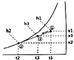
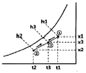
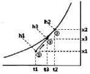
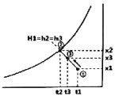
(정답률: 69%)
46. 에어 필터의 종류 중 병원의 수술실, 반도체 공장의 청정구역(clean room)등에 이용되는 고성능 에어 필터는?
- 백 필터
- 롤 필터
- HEPA 필터
- 전기 집진기
(정답률: 79%)
47. 냉각탑(cooling tower)에 대한 설명으로 틀린 것은?
- 일반적으로 쿨링 어프로치는 5˚C 정도로 한다.
- 냉각탑은 응축기에서 냉각수가 얻은 열을 공기 중에 방출하는 장치이다.
- 쿨링레인지란 냉각탑에서 냉각수 입ㆍ출구 수온차이다.
- 일반적으로 냉각탑으로의 보급수량은 순환수량의 15% 정도이다.
(정답률: 69%)
48. 내부에 송풍기와 냉ㆍ온수 코일이 내장되어 있으며, 각 실내에 설치되어 기계실로부터 냉ㆍ온수를 공급받아 실내공기의 상태를 직접 조절하는 공조기는?
- 패키지형 공조기
- 인덕션 유닛
- 팬코일 유닛
- 에어핸드링 유닛
(정답률: 73%)
49. 각종 공조방식 중 개별방식에 관한 설명으로 틀린 것은?
- 개별제어가 가능하다.
- 외기냉방이 용이하다.
- 국소적인 운전이 가능하여 에너지 절약적이다.
- 대량생산이 가능하여, 설비비와 운전비가 저렴해진다.
(정답률: 48%)
50. 건구온도 30˚C, 절대습도 0.015kg/kg'인 습공기의 엔탈피(kJ/kg)는? (단, 건공기 정압비열 1.01KJ/kgㆍK, 수증기 정압비열 1.85KJ/kgㆍK, 0˚C에서 포화수의 증발잠열은 2500KJ/kg 이다.)
- 68.63
- 91.12
- 103.34
- 150.54
(정답률: 45%)
51. 연도를 통과하는 배기가스에 분무수를 접촉시켜 공해물질을 흡수, 융해, 응축작용에 의해 불순물을 제거하는 집진장치는 무엇인가?
- 세정식 집진기
- 사이클론 집진기
- 공기 주입식 집진기
- 전기 집진기
(정답률: 77%)
52. 송풍기의 법칙에서 회전속도가 일정하고, 직경이 d, 동력이 L인 송풍기를 직경이 d1으로 크게 했을 때 동력(L1)을 나타내는 식은?(오류 신고가 접수된 문제입니다. 반드시 정답과 해설을 확인하시기 바랍니다.)
- L1=(d/d1)5L
- L1=(d/d1)4L
- L1=(d1/d)4L
- L1=(d1/d)5L
(정답률: 66%)
53. 다음 중 직접 난방법이 아닌 것은?
- 온풍 난방
- 고온수 난방
- 저압증기 난방
- 복사 난방
(정답률: 55%)
54. 방열기에서 상당방열면적(EDR)은 아래의 식으로 나타낸다. 이중 Q0 는 무엇을 뜻하는 가? (단, 사용단위로 Q는 W, Q0는 W/m2이다.)
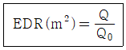
- 증발량
- 응축수량
- 방열기의 전방열량
- 방열기의 표준방열량
(정답률: 78%)
55. 9m×6m×3m의 강의실에 10명의 학생이 있다. 1인당 CO2 토출량이 15L/h이면, 실내 CO2을 0.1%로 유지시키는데 필요한 환기량(m3/h)은? (단, 외기의 CO2량은 0.04%로 한다.)
- 80
- 120
- 180
- 250
(정답률: 54%)
56. 덕트의 크기를 결정하는 방법이 아닌 것은?
- 등속법
- 등마찰법
- 등중량법
- 정압재취득법
(정답률: 72%)
57. 각층 유닛방식에 관한 설명으로 틀린 것은?
- 외기용 공조기가 있는 경우에는 습도제어가 곤란하다.
- 장치가 세분화되므로 설비비가 많이 들며, 기기관리가 불편하다.
- 각층마다 부하 및 운전시간이 다른 경우에 적합하다.
- 송풍 덕트가 짧게 된다.
(정답률: 66%)
58. 냉방부하의 종류 중 현열부하만 취득하는 것은?
- 태양복사열
- 인체에서의 발생열
- 침입외기에 의한 취득열
- 틈새 바람에 의한 부하
(정답률: 68%)
59. 화력발전설비에서 생산된 전력을 사용함과 동시에, 전력이 생산되는 과정에서 발생되는 열을 난방 등에 이용하는 방식은?
- 히트펌프(heat pump) 방식
- 가스엔진 구동형 히트펌프 방식
- 열병합발전(co-generation) 방식
- 지열 방식
(정답률: 81%)
60. 온풍난방의 특징에 관한 설명으로 틀린 것은?
- 송풍 동력이 크며, 설계가 나쁘면 실내로 소음이 전달되기 쉽다.
- 실온과 함께 실내습도, 실내기류를 제어할 수 있다.
- 실내 층고가 높을 경우에는 상하의 온도차가 크다.
- 예열부하가 크므로 예열시간이 길다.
(정답률: 76%)
4과목: 전기제어공학
61. 최대눈금이 100V인 직류전압계가 있다. 이 전압계를 사용하여 150V의 전압을 측정하려면 배율기의 저항(Ω)은?(단, 전압계의 내부저항은 5000Ω이다.)
- 1000
- 2500
- 5000
- 10000
(정답률: 59%)
62. 피드백제어계의 특징으로 옳은 것은?
- 정확성이 감소된다.
- 감대폭이 증가된다.
- 특성 변화에 대한 입력 대 출력비의 감도가 증대된다.
- 발진을 일으켜도 안정된 상태로 되어가는 경향이 있다.
(정답률: 46%)
63. 전동기의 회전방향을 알기위한 법칙은?
- 렌츠의 법칙
- 암페어의 법칙
- 플레밍의 왼손 법칙
- 플레밍의 오른손 법칙
(정답률: 76%)
64. i=Im1sinωt+Im2(2sinωt+θ)의 실효값은?
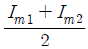
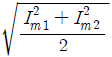
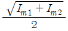
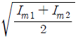
(정답률: 65%)
65. 서보기구에서 제어량은?
- 유량
- 전압
- 위치
- 주파수
(정답률: 69%)
66. 발열체의 구비조건으로 틀린 것은?
- 내열성이 클 것
- 용융온도가 높을 것
- 산화온도가 낮을 것
- 고온에서 기계적 강도가 클 것
(정답률: 75%)
67. 3상 농형 유도전동기 기동방법이 아닌 것은?
- 2차 저항법
- 전전압 기동법
- 기동 보상기법
- 리액터 기동법
(정답률: 52%)
68. 온도, 유량, 압력 등의 상태량을 제어량으로 하는 제어계는?
- 서보기구
- 정치제어
- 샘플값제어
- 프로세스제어
(정답률: 63%)
69. 서보 전동기의 특징이 아닌 것은?
- 속응성이 높다
- 전기자 지름이 작다
- 시동, 정지 및 역전의 동작을 자주 반복한다
- 큰 회전력을 얻기 위해 축 방향으로 전기자의 길이가 짧다.
(정답률: 53%)
70. 스위치를 닫거나 열기만 하는 제어동작은?
- 비례동작
- 미분동작
- 적분동작
- 2위치동작
(정답률: 81%)
71. 정전용량이 같은 2개의 콘덴서를 병렬로 연결했을 때의 합성 정전 용량은 직렬로 했을 때의 합성 정전용량의 몇 배인가?
- 1/2
- 2
- 4
- 8
(정답률: 58%)
72. 저항체에 전류가 흐르면 줄열이 발생하는데 이때 전류 I와 전력 P의 관계는?
- I=P
- I=P0.5
- I=P1.5
- I=P2
(정답률: 71%)
73. 정격 10kW의 3상 유도 전동기가 기계손 200W, 전부하슬립 4%로 운전될 때 2차 동손은 몇 W인가?
- 375
- 392
- 409
- 425
(정답률: 30%)
74. 그림과 같은 논리회로가 나타내는 식은?
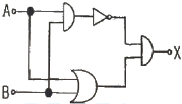
- X=AB+BA
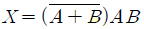
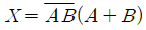
- X=AB+(A+B)
(정답률: 62%)
75. 입력으로 단위 계단함수 u(t)를 가했을 때 출력이 그림과 같은 조절계의 기본 동작은?
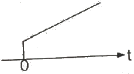
- 비례 동작
- 2위치 동작
- 비례 적분 동작
- 비례 미분 동작
(정답률: 63%)
76. 어떤 회로에 정현파 전압을 가하니 90˚위상이 뒤진 전류가 흘렀다면 이 회로의 부하는?
- 저항
- 용량성
- 무부하
- 유도성
(정답률: 58%)
77. 자동제어에서 미리 정해 놓은 순서에 따라 제어의 각 단계가 순차적으로 진행되는 제어방식은?
- 서보제어
- 되먹임제어
- 시퀀스제어
- 프로세스제어
(정답률: 71%)
78. 온도-전압의 변환장치는?
- 열전대
- 전자석
- 벨로우즈
- 광전다이오드
(정답률: 78%)
79. 그림과 같은 피드백 회로에서 종합 전달함수는?
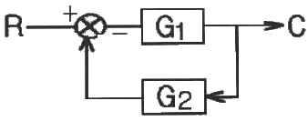
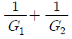
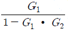
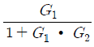
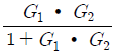
(정답률: 61%)
80. 자동제어기기의 조작용 기기가 아닌 것은?
- 클러치
- 전자밸브
- 서보전동기
- 엠플리다인
(정답률: 54%)
5과목: 배관일반
81. 관경 300mm, 배관길이 500m의 중압 가스수송관에서 A,B 점의 게이지 압력이 각각 3kgf/cm2, 2kgf/cm2인 경우 가스유량(m3/h)은? (단, 가스비중은 0.64, 유량계수는 52.31로 한다.)
- 10238
- 2⑤83
- 38317
- 40153
(정답률: 37%)
82. 증기난방 방식에서 응축수 환수 방법에 따른 분류가 아닌 것은?
- 기계 환수식
- 응축 환수식
- 진공 환수식
- 중력 환수식
(정답률: 59%)
83. 냉동설비의 토출가스 배관 시공 시 압축기와 응축기가 동일선상에 있는 경우 수평관의 구배는 어떻게 해야 하는가?(문제 오류로 실제 시험장에서는 2, 3번이 정답 처리 되었습니다. 여기서는 3번을 누르면 정답 처리 됩니다.)
- 1/100의 올림 구배로 한다.
- 1/100의 내림 구배로 한다.
- 1/50의 내림 구배로 한다.
- 1/50의 올림 구배로 한다.
(정답률: 65%)
84. 증기난방 배관시공에서 환수관에 수직 상향부가 필요할 때 리프트 피팅(lift fitting)을 써서 응축수가 위쪽으로 배출되게 하는 방식은?
- 단관 중력 환수식
- 복관 중력 환수식
- 진공 환수식
- 압력 환수식
(정답률: 62%)
85. 급수관에서 수평관을 상향구배 주어 시공하려고 할 때, 행거로 고정한 지점에서 구배를 자유롭게 조정할 수 있는지지 금속은?
- 고정 인서트
- 앵커
- 롤러
- 턴버클
(정답률: 54%)
86. 급수배관 설계 및 시공 상의 주의사항으로 틀린 것은?
- 수평배관에는 공기나 오물이 정체하지 않도록 한다.
- 주 배관에는 적당한 위치에 플랜지(유니언)를 달아 보수점검에 대비한다.
- 수격작용이 우려되는 곳에는 진공브레이커를 설치한다.
- 음료용 급수관과 다른 용도의 배관을 접속하지 않아야 한다.
(정답률: 67%)
87. 냉매 배관용 팽창밸브 종류로 가장 거리가 먼 것은?
- 수동형 팽창밸브
- 정압 팽창밸브
- 열동식 팽창밸브
- 팩리스 팽창밸브
(정답률: 61%)
88. 공조설비 구성 장치 중 공기 분배(운반)장치에 해당하는 것은?
- 냉각코일 및 필터
- 냉동기 및 보일러
- 제습기 및 가습기
- 송풍기 및 덕트
(정답률: 80%)
89. 스테인리스 강관의 특징에 대한 설명으로 틀린 것은?
- 내식성이 우수하여 내경의 축소, 저항 증대 현상이 없다
- 위생적이라서 적수, 백수, 청수의 염려가 없다
- 저온 충격성이 적고, 한랭지 배관이 가능하다.
- 나사식, 용접식 몰코식, 플랜지식 이음법이 있다.
(정답률: 53%)
90. 도시가스 제조사업소의 부지 경계에서 정압기지의 경계까지 이르는 배관을 무엇이라고 하는가?
- 본관
- 내관
- 공급관
- 사용관
(정답률: 62%)
91. 다음 방열기 표시에서 “5”의 의미는?
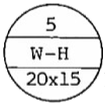
- 방열기의 섹션수
- 방열기의 사용압력
- 방열기의 종별과 형
- 유입관의 관경
(정답률: 75%)
92. 공조배관설비에서 수격작용의 방지책으로 틀린 것은?
- 관 내의 유속을 낮게 한다.
- 밸브는 펌프 흡입구 가까이 설치하고 제어한다.
- 펌프에 플라이휠(fly wheel)을 설치한다.
- 서지탱크를 설치한다.
(정답률: 69%)
93. 온수배관 시공 시 유의사항으로 틀린 것은?
- 일반적으로 팽창관에는 밸브를 달지 않는다.
- 배관의 최저부에는 배수밸브를 부착하는 것이 좋다.
- 공기밸브는 순환펌프의 흡입측에 부착하는 것이 좋다.
- 수평관은 팽창탱크를 향하여 올림구배가 되도록 한다.
(정답률: 56%)
94. 급수관의 유속을 제한(1.5~2m/s이하)하는 이유로 가장 거리가 먼 것은?
- 유속이 빠르면 흐름방향이 변하는 개소의 원심력에 의한 부압(-)이 생겨 캐비테이션이 발생하기 때문에
- 관 지름을 작게 할 수 있어 재료비 및 시공비가 절약되기 때문에
- 유속이 빠른 경우 배관의 마찰손실 및 관 내면의 침식이 커지기 때문에
- 워터해머 발생 시 충격압에 의해 소음, 진동이 발생하기 때문에
(정답률: 74%)
95. 신축 이음쇠의 종류에 해당되지 않는 것은?
- 벨로즈형
- 플랜지형
- 루프형
- 슬리브형
(정답률: 64%)
96. 배관의 종류별 주요 접합 방법이 아닌 것은?
- MR조인트 이음 - 스테인리스 강관
- 플레어 접합 이음 - 동관
- TS식 이음 - PVC관
- 콤보이음 - 연관
(정답률: 61%)
97. 도시가스 배관 설치기준으로 틀린 것은?
- 배관은 지반의 동결에 의해 손상을 받지 않는 깊이로 한다.
- 배관 접합은 용접을 원칙으로 한다.
- 가스계량기의 설치 높이는 바닥으로부터 1.6m 이상 2m 이내의 높이에 수직, 수평으로 설치한다.
- 폭 8m이상의 도로에 관을 매설할 경우에는 매설 깊이를 지면으로부터 0.6m 이상으로 한다.
(정답률: 69%)
98. 난방 배고나 시공을 위해 벽, 바닥 등에 관통 배관 시공을 할 때, 슬리브(sleeve)를 사용하는 이유로 가장 거리가 먼 것은?
- 열팽창에 따른 배관 신축에 적응하기 위해
- 후일 관 교체 시 편리하게 하기 위해
- 고장 시 수리를 편리하게 하기 위해
- 유체의 압력을 증가시키기 위해
(정답률: 67%)
99. 보온재 선정 시 고려해야 할 조건으로 틀린 것은?
- 부피 및 비중이 작아야 한다.
- 열전도율이 가능한 적어야 한다.
- 물리적, 화학적 강도가 커야 한다.
- 흡수성이 크고, 가공이 용이해야 한다.
(정답률: 75%)
100. 증기로 가열하는 간접가열식 급탕설비에서 저장탱크 주위에 설치하는 장치와 가장 거리가 먼 것은?
- 증기 트랩장치
- 자동온도조절장치
- 개방형팽창탱크
- 안전장치와 온도계
(정답률: 65%)